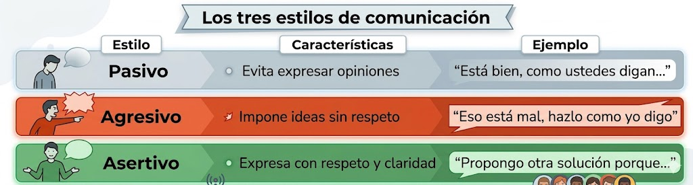
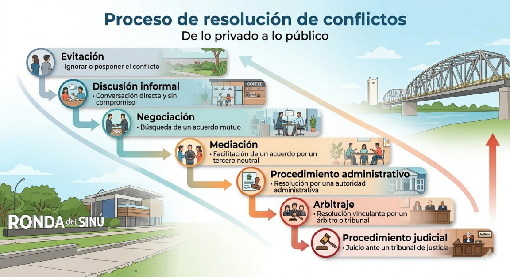
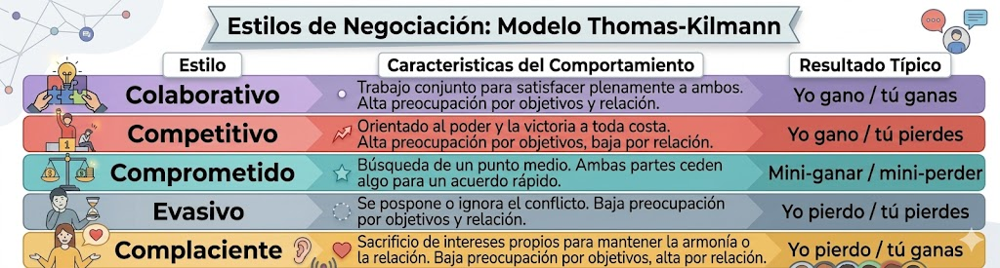
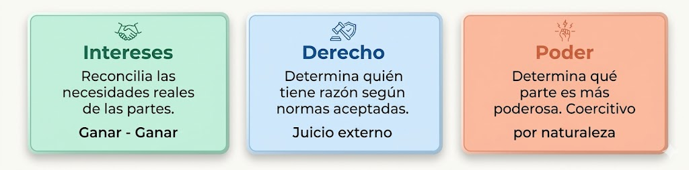
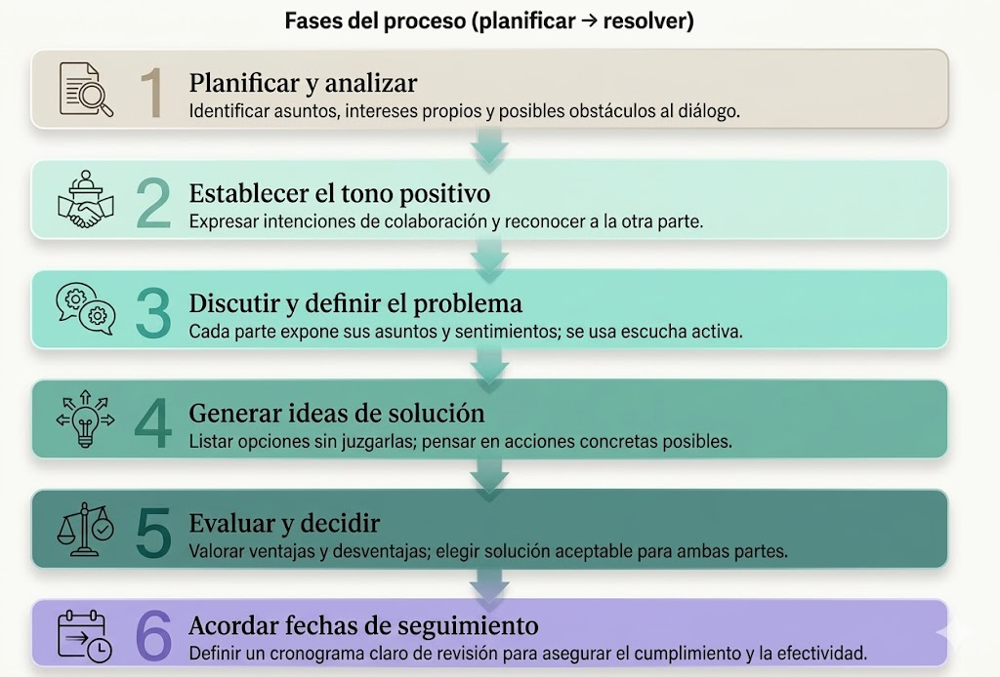

🗣️
Expresión clara
Permite defender una postura sin imponerla ni ocultarla.
En el desarrollo de software, trabajar en equipo implica conversar, negociar prioridades, revisar decisiones técnicas y manejar desacuerdos. Los conflictos aparecen con frecuencia, pero no tienen que destruir la relación ni bloquear el avance del proyecto.
La comunicación asertiva permite expresar ideas, opiniones y desacuerdos de forma clara, directa y respetuosa. Cuando se combina con estrategias de resolución de conflictos, ayuda a cuidar tanto los resultados como la relación entre las personas.
En contextos tecnológicos, esta habilidad es clave para revisar código, levantar requerimientos, discutir cambios y resolver tensiones sin caer en la pasividad, la agresión o la evasión del problema.
🗣️
Permite defender una postura sin imponerla ni ocultarla.
⚖️
Ayuda a transformar desacuerdos en oportunidades de ajuste y mejora.
🤝
Fortalece la relación profesional y reduce fricciones innecesarias.
Explora el tema mediante módulos visuales, comparaciones, infografías de la guía, ejemplos situados en desarrollo de software y tarjetas de respaldo para comunicar desacuerdos con más claridad y respeto.
La comunicación asertiva es la capacidad de expresar ideas con claridad, defender opiniones sin agredir, respetar a los demás y escuchar activamente. No significa ceder siempre ni imponerse, sino encontrar un equilibrio entre lo que pienso, lo que digo y cómo lo digo.
No ocultas tu opinión ni la disfrazas; la presentas de forma comprensible y firme.
Defiendes el punto sin atacar a la persona ni usar un tono degradante.
Consideras argumentos, emociones y necesidades antes de responder.
Buscas avanzar en el problema, no demostrar superioridad.
“Yo propondría simplificar esta función porque hoy cuesta seguir su lógica y mantenerla”.
“Entiendo la urgencia. Para responder mejor, necesito precisar qué canal impacta más tus ventas”.
“Yo necesito que definamos la prioridad antes de implementar para evitar retrabajo”.

“Está bien, como ustedes digan”, aunque el enfoque tenga riesgos técnicos.
“Eso está mal, háganlo como yo digo”, sin explicar ni escuchar otras restricciones.
“Propongo otra solución porque mejora mantenibilidad y reduce errores; revisemos si cumple también con la fecha y el alcance”.
Parece evitar el conflicto, pero deja frustración acumulada y decisiones poco discutidas.
Produce respuestas defensivas, desgaste y resistencia a colaborar.
Permite discutir desacuerdos con foco en el problema y no en el ataque personal.
El conflicto surge cuando personas interdependientes perciben objetivos incompatibles o interferencias mutuas. No siempre es negativo: puede evitar estancamientos, estimular el interés, impulsar cambios y aclarar diferencias reales.
Surgen por emociones negativas intensas, percepciones falsas o comunicación deficiente.
Aparecen por falta de datos, información errónea o criterios distintos sobre qué es relevante.
Se relacionan con tiempo, recursos, reconocimiento, procedimientos o participación.
Se asocian a desigualdad de poder, escasez de recursos o formas rígidas de organización.
Ocurren cuando se intentan imponer creencias o criterios personales sobre otros.
Nadie nombra el malestar, pero se siente resistencia al coordinar tareas o revisar entregas.
Empiezan respuestas cortantes, silencios prolongados o mensajes ambiguos que alimentan suposiciones.
Una frase irónica o un tono despectivo cambia la conversación técnica por una confrontación personal.


Busca el mejor resultado posible mientras protege la relación. Es el estilo más completo.
Prioriza ganar o imponer la propia postura, aunque el vínculo se deteriore.
Ambas partes ceden algo para llegar a un punto medio aceptable.
Pospone o niega el problema, pero el conflicto sigue latente.
Prioriza mantener la relación, incluso sacrificando intereses propios de forma recurrente.
Cuando importa la calidad de la solución y también la relación futura entre las partes.
Cuando el tiempo es limitado y ambas partes pueden ceder sin afectar lo esencial.
Solo como decisión consciente y puntual, no como hábito para postergar problemas reales.

Haz clic en cada tarjeta para ver una forma práctica de aplicar la técnica en un desacuerdo académico o técnico.

Analiza el caso de un negocio que vende por tienda física, WhatsApp e Instagram y presenta inventario desactualizado, pedidos duplicados o perdidos, ausencia de reportes por canal y desorganización entre empleados.
Identifica problemas técnicos y necesidades funcionales del sistema.
Propone alternativas y revisa viabilidad de integración entre canales.
Organiza requerimientos, prioridades y criterios de seguimiento.
Evalúa si el grupo usa lenguaje asertivo, escucha activa y resolución constructiva.
Lee cada frase y clasifícala como `Pasivo`, `Agresivo` o `Asertivo`.
“Yo propongo revisar esta implementación porque el flujo actual puede generar errores al registrar usuarios”.
“Eso está mal. Hazlo como yo digo porque tu solución no sirve”.
“Está bien, no importa, como ustedes digan”, aunque la persona no esté de acuerdo.
“Entiendo tu punto. Yo veo un riesgo en tiempos y me gustaría comparar ambas opciones antes de decidir”.
Construye la secuencia correcta de los seis pasos para resolver un conflicto.
Selecciona el conflicto, el enfoque del lenguaje del yo y la solicitud final. El sistema armará una respuesta sugerida.
Responde las preguntas de la guía para comprobar tu comprensión sobre comunicación asertiva, tipos de conflicto y estrategias de resolución.
Consulta estos materiales para ampliar la comprensión de la asertividad, la comunicación en el trabajo y la resolución de conflictos.
Documento complementario para reforzar lenguaje del yo, estilos comunicativos y derechos asertivos.
Ir al recursoArtículo útil para conectar claridad, escucha, inteligencia emocional y colaboración en equipos.
Ir al recursoMaterial para profundizar en el manejo de desacuerdos, roles y decisiones dentro del equipo.
Ir al recurso